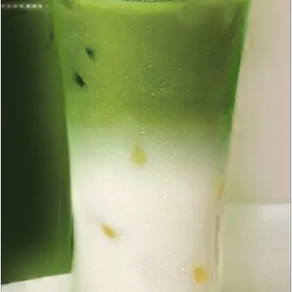

お店について
湯布院・金鱗湖の近くにある、抹茶とジェラートのカフェです。宇治のお茶を加工し、数種類の粉を合わせて、ジェラートや、おいしく飲める抹茶ラテをつくっています。ラテには、久住高原の牛乳を使っています。テイクアウトにも対応していますので、湯布院の散策のおともにどうぞ。

人気メニュー

抹茶ラテ宇治のお茶と、高原の牛乳でつくる抹茶ラテ。
ほうじ茶ラテ香ばしいほうじ茶と牛乳の、やさしい味のラテ。

宇治抹茶のジェラート宇治のお茶を使った、香り高い抹茶のジェラート。
店舗情報・ご利用案内
- 住所
- 〒879-5102
大分県由布市湯布院町川上1551-11 - 営業時間
- 10:00〜16:00
- 休業日
- 不定休
- 席数
- 4席（テイクアウトにも対応しています）
- お支払い方法
- 現金・電子決済・クレジットカード・QR決済
- お問い合わせ
- お問い合わせフォームまたはメール（お電話は承っておりません）
不定休のため、ご来店前にGoogleマップの営業情報をご確認ください。席数が少ないため、混雑時はテイクアウトもご利用ください。
よくある質問
営業時間と定休日を教えてください。
10:00〜16:00で、不定休です。ご来店前にGoogleマップで営業情報をご確認ください。
席は何席ありますか？
4席です。テイクアウトにも対応しています。
支払い方法は何が使えますか？
現金、電子決済、クレジットカード、QR決済がご利用いただけます。
おすすめのメニューは？
抹茶ラテ、ほうじ茶ラテ、抹茶アフォガートが人気です。
テイクアウトはできますか？
はい、テイクアウトに対応しています。
通販はできますか？
はい。公式オンラインショップ（STORES）で、冷凍便にて全国へお届けしています。